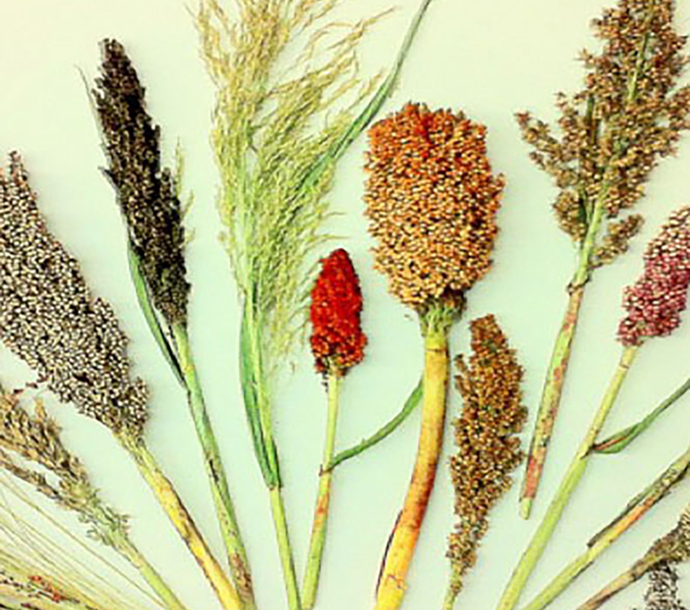

Structural Variation and the Evolution of Sweet Sorghum
Sorghum is the 5th most important cereal crop in the world, and modern day varieties have been adapted for very diverse purposes, resulting in some strikingly distinct phenotypes. Grain sorghum is what most people typically think of when they picture sorghum; these varieties are often relatively short (2-3 ft), mature quickly, and produce large quanitites of seed. But another type of sorghum is Sweet sorghum, which is cultivated for the sugars it produces in its stalk. Sweet varieties can be quite tall (7-8 ft), take longer to mature, and produce fewer seeds. To understand the genetic basis for these differences, we are looking at:
Gene rearrangements, gene copy number differences, and genetic divergence within species-specific gene copies between the two types of sorghums
Gene expression differences, and how structural variations affect expression
Mutations that are unique to certain populations or geographic regions, suggesting parallel origins of the sweet phenotype
Downstrean Effects of Mutations in Sorghum-Specific Iron Transporters
In one potential example of a duplicated gene copy playing a role in recent sorghum evolution, we found that a putative iron transporter unique to this species was highly correlated with differences in compositional traits, including stalk sugar production. We are interested in questions related to how this new gene copy functions and how mutations impact downstream expression and phenotypes:
How do iron limiting or iron excess conditions affect the expression of different alleles of this gene, and how do early development changes in iron conditions impact mature phenotypes?
How are changes in expression in the iron-related pathways related to later changes in sugar production and sugar transport pathways?
What are the key regulators of these pathways that may represent the best targets for crop improvement?

Evolutionary Origins of Domesticated Sorghum
Many crop species have been suspected of having been domesticated more than once, but distinguishing between multiple origins versus a single origin followed by local adaptation and introgression is often difficult. We are using genome-wide SNP data and demographic modeling approaches to test the hypothesis of a second domestication even in western Africa, in order to better understand the origins of sorghum and the history of agriculture:
Scenario 1: Sorghum is domesticated once in central Africa (near present day Sudan), and then domesticated varieties are spread by humans to western Africa. After its introduction to west Africa, some domesticated sorghum varieties are backcrossed to local wild sorghum plants, making them genetically distinct and highly adapted to the region.
Scenario 2: Sorghum is domesticated twice, once in central Africa, but then again separately in western Africa. Because west African sorghums were derived from local wild sorghums, they have remained genetically distinct over the years.
Local Adaptation and Range Exanpansion in Culex Mosquitoes
Culex tarsalis mosquitoes are carriers of many dangerous diseases, including West Nile Virus and the Zika virus. This species also bites and infects livestock animals, making it a concern for agricultural productivity as well as human health. C. tarsalis originated in western North America, but has since spread east across the Rockies and into the Midwest. While it is not currently found east of the Mississippi, it is unknown whether or not it has the potential to keep spreading. In this project, we are looking at:
What environmental factors drive local adaptation and genetic divergence in different populations of Culex
Can we predict the spread of Culex in the near future to better inform management practices to mitigate disease risks?
Assembly and Annotation of the Wyeomyia smithii Genome
Wyeomyia smithii, commonly known as the Pitcher Plant Mosquito, is a unique species of mosquito that had adapted to complete its entire larval phase inside of the carnivorous purple pitcher plant. We are currently collaborating with researchers from the University of Oregon and Georgetown University to complete the first reference genome for the species in order to:
Identify changes in gene content or structure that might be responsible for Wyeomyia's unique adaptations
Find signals of positive selection that were important for the evolution of this species